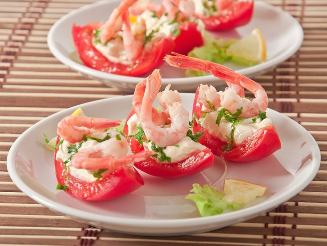

-

BIENVENIDO..!
Endulza tu vida con tu postre favorito -
Come,Saborea y disfruta como en casa
-
Comparte fotos, videos y recetas de todo el mundo
-

!UNETE!
rompamos la dieta..!
Como amante de la repostería, uno siempre tiene curiosidad de saber más sobre los secretos de los chefs de otros países .
pues !ESTAS EN EL LUGAR PERFECTO!
DEGLU te ayudará a ver publicaciones, fotos, videos y sobre todo recetas originarias de donde provienen dichos postres.
con DEGLU podrás contactarte con chefs extranjeros. NO ESPERES MÁS, Y EMPIEZA DESDE HOY..!!